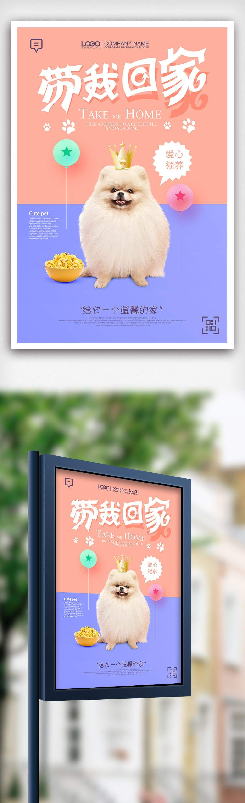
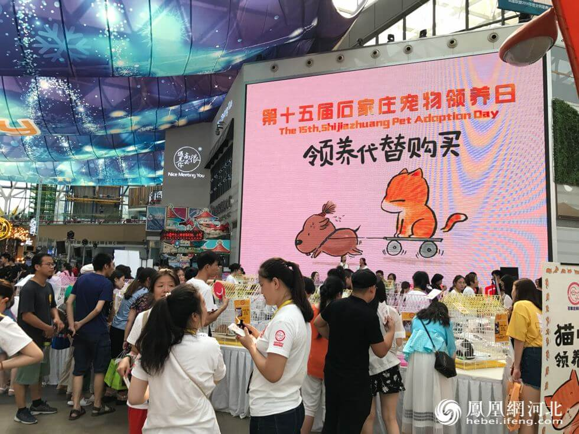

公益，随手之劳
发布日期：2018-08-15来源：宠爱之家

一提起公益，大家想起的总是救助、捐款、新闻报道的那些大善和大爱。诚然，这些令人动容的大善大爱，十分令人感动。
可我认为，公益如果想走得更远，影响更多的人，应该更注意一些随手可做的小事。这些身边的小事，会像星星之火一样，在无形之中，影响感染别人，最终形成全民公益。
流浪动物在救助以前，他们过着怎么样的生活？
是在大街上夹着尾巴游荡，不知归处。
是每天都在面临着疾病、温饱、居无定所等问题的困扰。
还是陷入了被虐待、被毒杀、被贩卖到餐桌上、被剥去身上的毛皮的绝境？
动物和人一样，也有知觉，有内心世界，知道自己的处境。
动物和人一样，也需要被爱，也有感情。
我们人类作为万物之灵，不仅仅应当专注于自己的生存，还应该心存善意，给流浪动物分一点温暖和小小心意。
《宠爱之家》决心投入于流浪动物救助的公益事业，但我们力量有限，因此选择了借助于app这样一个平台，来呼吁大家一起共事。
并不需要你倾囊相助，只需要简单地，伸出您善意的双手，来善待身边的流浪动物。开车前，检查一下是否有流浪猫狗躲在车下、轮胎缝中；如果有不认路的流浪猫狗，请放缓您的脚步，让他们能够从容地过了车水马龙。
当然，如果您能够为平台上有需要的个人或集体，贡献您一点力量，壮大救助站的力量，帮助更多的流浪猫狗，那也是一种大爱。您的资金将用于救助流浪猫狗，款项用处会定期公布。
我们呼吁大家一起来做这样一件小事，救助流浪动物，是种对生命的态度，和敬畏，我们只是简单地位流浪猫狗换一口粮，但却可以带给他们生的希望。
虽然生命很常见，但其实，每个生命都是一个奇迹。
值得被平等对待，至少带着尊重。
